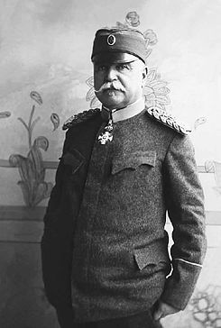

Stepa Stepanović (Kumodraž 12. mart 1856. - Čačak 27. april 1929.) je srpski vojskovođa koji se smatra jednim od najvećih junaka srpske vojne istorije.
Stepa Stepanović se srpskoj vojsci priključio 1874. godine kao pitomac Artiljerijske škole. Učesnik je srpsko-turskih ratova (1876-1878.), kao pitomac-narednik, kasnije potporučnik. Već tada bio je zapažen kao hrabar i istrajan vojni starešina, koji je u kritičnim momentima ulazio u streljački stroj da ličnim primerom hrabri svoje vojnike, zbog čega je odlikovan Takovskim krstom s mačevima.
U periodu između bitaka na Slivnici i kod Kumanova obavljao je dužnosti komandanta bataljona, puka, brigade i divizije i pomoćnika načelnika Glavnog generalštaba.
Dva puta bio je i ministar vojske. U tom periodu Srpska vojska je u organizacionom, stručnom, materijalnom i moralnom pogledu bila dobro pripremljena za predstojeće ratove.
U Prvom balkanskom ratu (1912-1913.) Stepa Stepanović je komandovao Drugom armijom, koja je sa pravca Custendil-Dupnica ugrozila desni bok turske Vardarske armije i njeno odstupanje pretvorila u panično bekstvo.
Dugotrajno ratovanje pod Jedrenom, njegovo zauzimanje, kao i zarobljavanje više od 60.000 Turaka samo su neki od uspeha Druge armije i njenog komandanta. U Drugom balkanskom ratu, armija pod Stepinom komandom požrtvovano je branila nišavsku zonu sa utvrđenim logorom u Pirotu.
Kada je počeo Prvi svetski rat, kao zastupnik odsutnog načelnika Štaba Vrhovne komande Radomira Putnika, znalački je rukovodio mobilizacijom i koncentracijom Srpske vojske.
Posle Putnikovog povratka u zemlju, ponovo preuzima dužnost komandanta Druge armije i sa njenim glavnim snagama izvodi marš-manevar preko Kočeljeva i Tekeriša. U strahovitom noćnom sudaru, na istočnim padinama Cera, porazio je 21. diviziju austrougarskog 8. korpusa i praktično rešio ishod Cerske bitke.>Posle Putnikovog povratka u zemlju, ponovo preuzima dužnost komandanta Druge armije i sa njenim glavnim snagama izvodi marš-manevar preko Kočeljeva i Tekeriša. U strahovitom noćnom sudaru, na istočnim padinama Cera, porazio je 21. diviziju austrougarskog 8. korpusa i praktično rešio ishod Cerske bitke.